Abbreviation: Sigla do país. Utiliza-se dois caracteres.
Currency: Símbolo monetário utilizado pelo país. Esse símbolo será utilizado em todas as telas com preços.
Language: Idioma utilizado pelo país. Esse item afeta o idioma em que os textos do player serão exibidos. Atualmente, os idiomas disponíveis são Português e Espanhol.
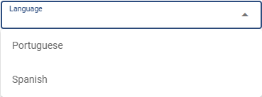
AM/PM - 12 horas: Formato onde às 11 da noite é representado por 11pm.
Completo (Militar) - 24 horas: Formato onde às 11 da noite é representado por 23h.
State
Criação dos estados onde os cinemas estão localizados.
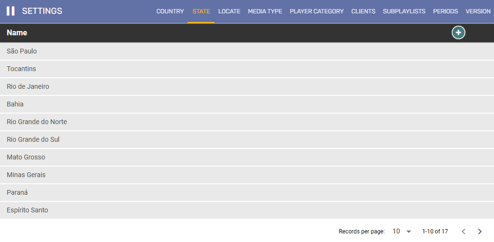
Name: Nome do estado.
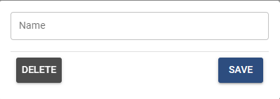
Locate
Localização dentro do cinema onde a máquina está localizada.
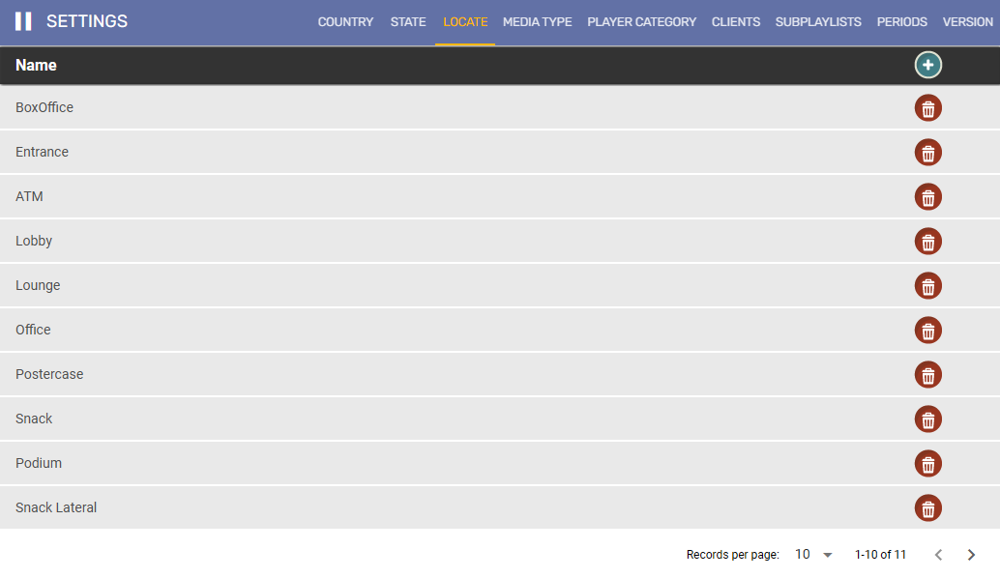
Name: Nome do local.
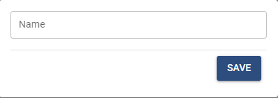
Media Type
Tipificação dada às mídias que serão upadas no sistema.
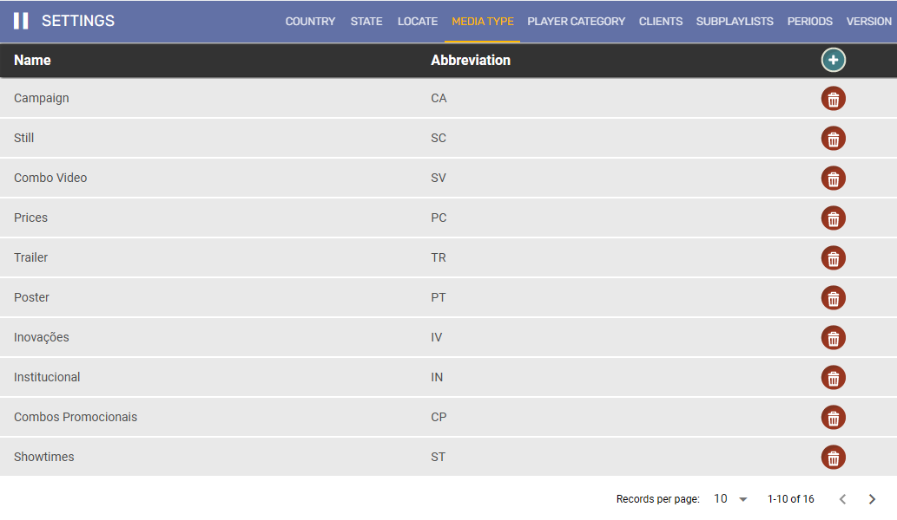
Name: Nome do Media Type.
Abbreviation: Abreviação do nome. Utiliza-se dois caracteres.
Counting: Item de contagem da mídia. Quando ativo, faz com que o player salve a quantidade de vezes que aquele tipo de mídia é reproduzido.
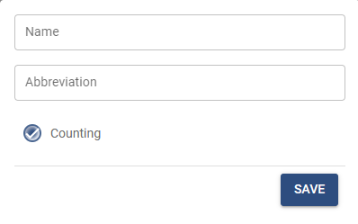
Player Category
Categorização do player de acordo com o tipo de cinema ou conteúdo.
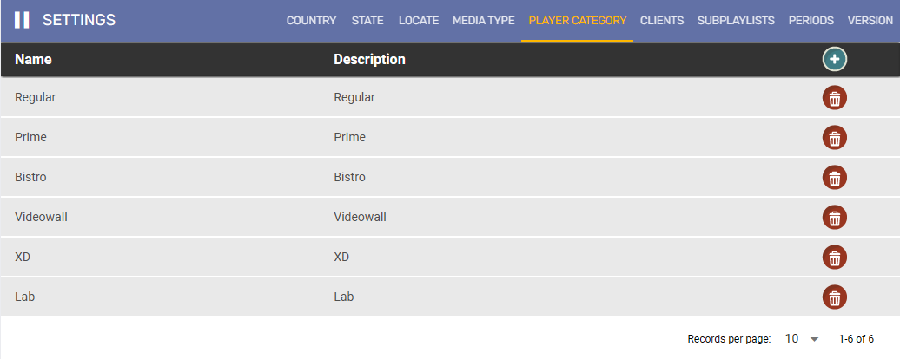
Name: Nome da categoria.
Description: Descrição da categoria.
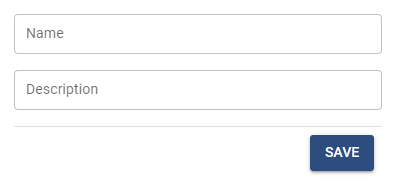
Clients
Criação de clientes (incluir uma descriao melhor)
Name: Nome do cliente.
Description: Descrição do cliente.
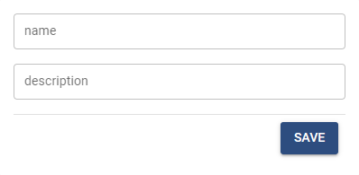
Subplaylists
Criação de subplaylists. Serão utilizadas para agrupar conteúdos do mesmo tipo em playlists e alternar esses conteúdos com os itens fora da subplaylist.
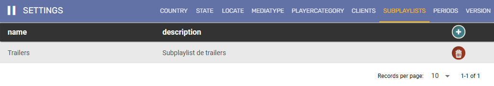
Name: Nome da sublaylist.
Description: Descrição da subplaylist.
Periods
Criação de período. Configuração utilizada para que a mídia seja exibida apenas dentro do período selecionado. 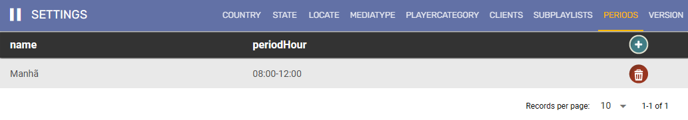
Name: Nome do período.
Hours: Duração do período. Deve ser configurado considerando o horário militar.
Start: Horário em que a mídia começará a ser exibida.
End: Horário em que a mídia deixará de ser exibida.